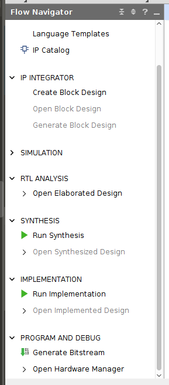
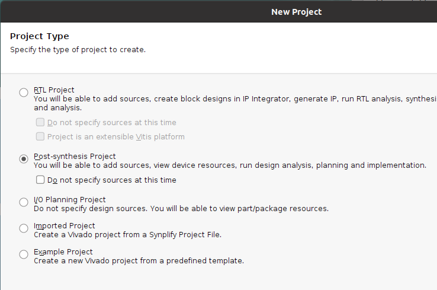

Vivado/Vivado
This walk through explains how to take a netlist from Vivado and run it through SpyDrNet TMR, then reinsert the triplicated design back into Vivado to generate a bitstream.
Uploading the Verilog HDL into Vivado
The first step is to create an RTL project in Vivado.
Tip: Name the project simpleCounter (this allows for the python scripts to be run without any changes).

Create the project and add simpleCounter.sv to the project.
Download: simpleCounter.sv
Getting the Netlist from Vivado
After adding the simpleCounter.sv file to your project, go to the “Flow Navigator” window on the left hand side of the screen, and click on “Run Synthesis.”
Exporting the Netlist
Once synthesis has been run expand the “Open Synthesized Design” tab under the “Synthesis” section, and click on the “Schematic” option.
To Export the Netlist click on File in the upper left, go down to Export, then click on Export Netlist.
A window pops up with the option to export EDIF and Verilog Netlists. Select the desired file format and file destination then click ok.

If downloading an EDIF file change the file type from .edn to .edf (The python script in this walkthrough uses .edf to run tmr on EDIF netlists).
Using the tcl command line in Vivado
To export the netlist using the tcl command line type write_edif simpleCounter.edf or write_verilog simpleCounter.v
Triplicating the design - SpyDrNet TMR
If using the .edf file, the following code runs the netlist through SpyDrNet TMR.
import spydrnet as sdn
from spydrnet.uniquify import uniquify
from spydrnet_tmr.support_files.vendor_names import XILINX
from spydrnet_tmr.analysis.voter_insertion.find_after_ff_voter_points import (
find_after_ff_voter_points,
)
from spydrnet_tmr import apply_nmr, insert_organs
from spydrnet_tmr.transformation.replication.organ import XilinxTMRVoter
# Parse in the downloaded .v netlist
netlist = sdn.parse("simpleCounter.edf")
# Makes all instances unique in the netlist
uniquify(netlist)
# Gets all of the hinstances in the design but leaves out VCC GND and IBUF
# as those should not be triplicated
hinstances_to_replicate = list(
netlist.get_hinstances(
recursive=True, filter=lambda x: x.item.reference.is_leaf() is True
and "VCC" not in x.name
and "GND" not in x.name
and "ibuf" not in x.name.lower()
and "IBUF" not in x.item.reference.name))
# Gets all of the OUT hports in the design
hports_to_replicate = list(netlist.get_hports(filter = lambda x: x.item.direction is sdn.OUT))
instances_to_replicate = list(x.item for x in hinstances_to_replicate)
ports_to_replicate = list(x.item for x in hports_to_replicate)
# Find insertion points, in this walkthrough find_after_ff_voter_points is used to find all insertion points
# after flip-flops based on the instances and ports that will be replicated.
insertion_points = find_after_ff_voter_points(netlist,
[*hinstances_to_replicate, *hports_to_replicate],
XILINX
)
# Replicate instances and ports
replicas = apply_nmr(
[*instances_to_replicate, *ports_to_replicate],
3,
name_suffix="TMR",
rename_original=True,
)
# Insert voters at each insertion point
voters = insert_organs(replicas, insertion_points, XilinxTMRVoter(), "VOTER")
# Compose the triplicated netlist
netlist.compose("simpleCounter_tmr.edf")
Download: edf_tmr_script.py
If using the .v file, the following code runs the netlist through SpyDrNet TMR.
import spydrnet as sdn
from spydrnet.uniquify import uniquify
from spydrnet_tmr.support_files.vendor_names import XILINX
from spydrnet.util.architecture import XILINX_7SERIES
from spydrnet_tmr.analysis.voter_insertion.find_after_ff_voter_points import (
find_after_ff_voter_points,
)
from spydrnet_tmr import apply_nmr, insert_organs
from spydrnet_tmr.transformation.replication.organ import XilinxTMRVoterVerilog
# Parse in the downloaded .v netlist
netlist = sdn.parse("simpleCounter.v",architecture=XILINX_7SERIES,remove_space=True)
# Makes all instances unique in the netlist
uniquify(netlist)
# Gets all of the hinstances in the design but leaves out VCC GND and IBUF as those should not be triplicated
hinstances_to_replicate = list(
netlist.get_hinstances(
recursive=True, filter=lambda x: x.item.reference.is_leaf() is True
and "VCC" not in x.name
and "GND" not in x.name
and "ibuf" not in x.name.lower()
and "CARRY4" not in x.item.reference.name
and "IBUF" not in x.item.reference.name))
# Gets all of the OUT hports in the design
hports_to_replicate = list(netlist.get_hports(filter = lambda x: x.item.direction is sdn.OUT))
instances_to_replicate = list(x.item for x in hinstances_to_replicate)
ports_to_replicate = list(x.item for x in hports_to_replicate)
insertion_points = find_after_ff_voter_points(netlist,
[*hinstances_to_replicate, *hports_to_replicate],
XILINX
)
replicas = apply_nmr(
[*instances_to_replicate, *ports_to_replicate],
3,
name_suffix="TMR",
rename_original=True,
)
voters = insert_organs(replicas, insertion_points, XilinxTMRVoterVerilog(), "VOTER")
# Compose the triplicated netlist
netlist.compose("simpleCounter_tmr.v", voters, reinsert_space=True)
Download: verilog_tmr_script.py
Tip: Make sure that the python script(s) and the netlist(s) from vivado are both in the same location.
SpyDrNet TMR to Vivado
Create new project in Vivado and choose Post-synthesis Project.
NOTE: If the .xdc file is downloaded from the link below, rename the file from simpleCounter_tmr.xdc.txt to simpleCounter_tmr.xdc
If working with a .edf file, upload simpleCounter_tmr.edf that was just created and simpleCounter_tmr.xdc to the project.
If working with a .v file, upload simpleCoutner_tmr.v and simpleCounter_tmr.xdc to the project.
Download: simpleCounter_tmr.xdc
Vivado to Bitstream
After adding the source files for your project, go to the “Flow Navigator” window on the left hand side of the screen, and click on “Generate Bitstream” under “Program and Debug.”
NOTE: The verilog netlist asks for a top module to be specified click “OK” on the box that pops up and then click on the 3 dots on the next pop up, then select simpleCounter as the top module.
Once the Bitstream has been generated click on “Open Hardware Manager” under the tab “Program and Debug”, click on “Open Target” then click on “Auto Connect”, next click on “Program Device”. A window should open up, click on program to download the bitstream to your device.
Verifying if the Design Works
The counter in this design increments when btnc is pressed. Once it reaches a count of 15 (4 LEDs are on) it rolls over to 0 and starts counting up again. If at any point btnu is pressed the count is reset to 0. Since this is a TMR design there should be 3 sets of 4 leds in total.
Set 1 (LEDS 0-3), Set 2 (LEDs 5-8), Set 3 (LEDs 10-13)
Note
This example was designed using a BASYS 3 board. If a different FPGA is being used the simpleCounter_tmr.xdc file will need to be modified accordingly.
To get the Verilog netlist to work properly the Carry4 primitives were not triplicated
Files: